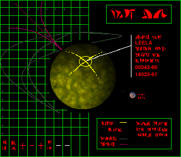

<security channel open>
<defense priority 120-f>
***INCOMING MESSAGE FROM ANGE***
Bienvenue sur ce site dédié à Marathon, un jeu de tir à la première personne développé par Bungie dont le premier épisode est sorti en 1994.
 Ce site a été concu par Ange Pagel dans le cadre d'un projet Web de la spécialité Informatique et Sciences du Numérique (ISN) de Terminale Scientifique.
Marathon est un jeu que j'apprécie particulièrement pour son histoire et son atmosphère. Ce site s'inspire de l'apparence des terminaux du jeu, guidant le joueur à travers les niveux et lui donnant des informations sur les événements qui se produisent.
Au-delà du jeu, je tiens à rendre hommage au projet open source Aleph One. Aleph One est la suite du moteur de jeu de Marathon 2 développé par Bungie et permet à de nombreux joueurs de découvrir ou de redécouvrir la trilogie de jeux Marathon sur de nombreux systèmes d'exploitation.
***END MESSAGE***